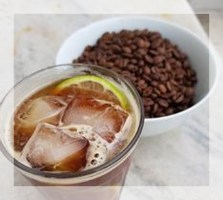
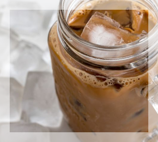
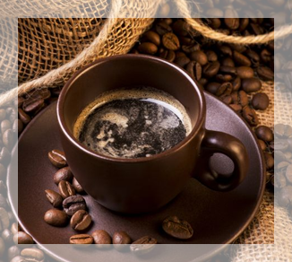

RECEITAS NOVAS DOS NOSSOS NOVOS DRINKS
Brisa de Limão
O drinque saudável perfeito, este elixir combina ervas, minerais e vitaminas com um toque de
limão em uma maravilha cítrica e suave, que manterá seu sistema imunológico perfeito dia e
noite.
Chá de Resfriamento
Não é nosso chá tradicional,mas esse elixir mistura mate com temperos chai e junta uma
pitada de chocolate extra para um sabor de cafeína no gelo.
Bebida Negra do cérebro
Quer turbinar seu cérebro? Experimente nosso elixir Bebida Negra do Cérebro, feita com chá
de oolong negro e apenas um toque de expresso. Seu cérebro agradecerá a turbinada.